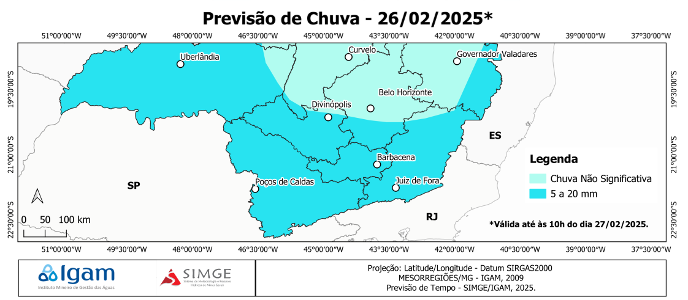

BOLETIM DA DEFESA CIVIL
|
Previsão para Bom Jardim de Minas |
||||
|---|---|---|---|---|
| dia | 🌡 | 💧 | ☔ | Descrição |
| qua |
30oC 16oC |
49% |  |
Tempestades isoladas |
| qui |
30oC 17oC |
46% |  |
Parcialmente nublado |
| sex |
30oC 16oC |
40% | |
Parcialmente nublado |
| sab |
30oC 16oC |
43% | |
Parcialmente nublado |
| dom |
30oC 16oC |
43% | |
Parcialmente nublado |
| seg |
30oC 16oC |
51% | |
Parcialmente nublado |
| ter |
29oC 16oC |
53% |  |
Ensolarado |
Previsão de tempo instável, com possibilidade de chuvas e tempestades de curta duração, em boa parte das regiões do estado de Minas Gerais. No extremo nordeste e leste do estado mineiro, as chuvas devem ser mais isoladas e ocasionais. Nas próximas 24 horas, os maiores volumes pluviométricos, até 20 mm, devem ocorrer em áreas do Triângulo/Alto Paranaíba, Sul e Zona da Mata.
O calor segue intenso, com temperaturas máximas acima dos 34 °C, à tarde, no Norte e Jequitinhonha. Os índices de umidade relativa do ar devem variar entre 35 e 45%, em boa parte das regiões mineiras.
Em Bom Jardim de Minas o céu fica parcialmente nublado com possibilidade de chuvas a partir da tarde. Temperatura máxima prevista de 30 °C e umidade mínima de 49% à tarde.
| Precipitação | entre 20 e 40 mm | |
|---|---|---|
| Tempo | Tempestades leves | |
| Umidade | 53% |
 |
TIPO DE ALERTA: TEMPESTADE |
INÍCIO DO ALERTA: 26 Fev 15:00 |
DESCRIÇÃO: INMET publica aviso iniciando em: 26/02/2025 15:00. Chuva entre 20 e 30 mm/h ou até 50 mm/dia, ventos intensos (40-60 km/h), e queda de granizo. Baixo risco de corte de energia elétrica, estragos em plantações, queda de galhos de árvores e de alagamentos. |
|
 |
GRAU DE RISCO: PERIGO POTENCIAL |
 |
FIM DO ALERTA: 26 Fev 22:00 |

|
|